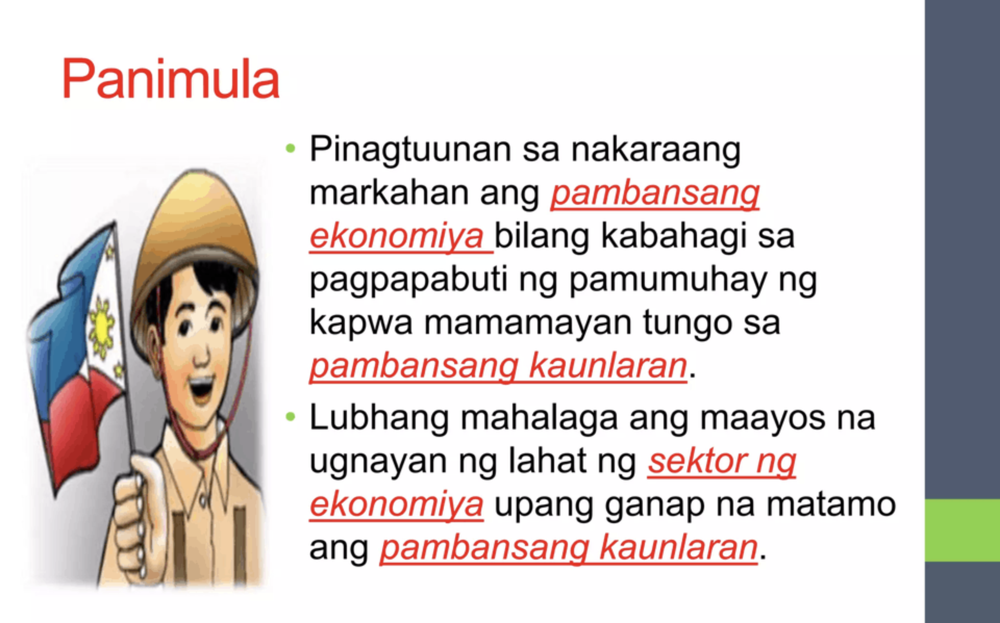

📘 Pambansang Kaunlaran
Aralin 1 - Quarter 4
Pambansang Kaunlaran
Isang estado ng bansa kung saan tinatamasa ng mga tao mula sa pinakamababang uri ng mamamayan ang nakakamanghang pagbabago sa ekonomiya at pamumuhay.
MGA KONSEPTO NG PAMBANSANG KAUNLARAN
- Pagbabago: Paraan upang maging iba o naiiba. Proseso ng pag-iiba o pagkakaroon ng kaibahan sa lipunan at ekonomiya.
- Pag-unlad: Pagbabago mula sa mababa tungo sa mataas na antas ng pamumuhay. Isang progresibo at aktibong proseso at ang pagsulong ay produkto nito.
- Pagsulong: Pag-usad tungo sa iyong layunin o goal. Pagpapaunlad ng kakayahan, kaalaman, at abilidad upang makasabay sa agos ng buhay.
- Ebolusyon: Pagbabago sa mga katangian sa loob ng mahabang panahon. Anuman ang unang dumating ay mas mabuti sa sinundang panahon.
DALAWANG KONSEPTO NG PAG-UNLAD (Todaro & Smith, 2012)
- Tradisyunal: Pagtamo ng patuloy na pagtaas ng income per capita.
- Makabago: Pagtamo ng patuloy na pagtaas ng income per capita at kumakatawan sa malawakang pagbabago sa buong sistemang panlipunan.
MGA SALIK NA MAAARING MAKATULONG SA PAGSULONG NG EKONOMIYA
- Likas na yaman
- Yamang-tao
- Kapital
- Teknolohiya at Inobasyon
MGA PALATANDAAN NG PAG-UNLAD
- Makatwiran at dinamikong kaayusan ng panlipunan
- Kasaganaan at kasarinlan
- Kalayaan sa kahirapan, hanapbuhay para sa lahat, umaangat na istandard ng pamumuhay, at mainam na uri ng buhay para sa lahat
- Sapat na mga lingkurang panlipunan
- Katarungang panlipunan
SUKATAN NG KAUNLARAN NG BANSA AYON SA UNITED NATIONS
Maliban sa paggamit ng GDP at GNP, ginagamit ang Human Development Index (HDI) bilang isa sa mga panukat sa antas ng pag-unlad ng isang bansa.
ANTAS NG KAUNLARAN NG BANSA
- Maunlad na Bansa: Mataas na GDP, income per capita, at mataas na HDI.
- Umuunlad na Bansa: Mga bansang may mga industriyang pinauunlad ngunit hindi pantay ang GDP at HDI.
- Papaunlad na Bansa: Mababang antas ng industriyalisasyon, agrikultura, at GDP/HDI.
MGA TUNGKULIN PARA SA PAG-UNLAD NG BANSA
- Suportahan ang ating pamahalaan
- Sundin at igalang ang batas
- Alagaan ang ating kapaligiran
- Tumulong sa pagpuksa sa korapsyon at katiwalian
- Maging produktibo at tangkilikin ang mga produktong Pilipino
- Magtipid ng enerhiya
- Makilahok sa mga gawaing pansibiko
MGA GAMPANIN NG MAMAMAYAN SA PAG-UNLAD NG BANSA
- Mapanagutan: Tamang pagbabayad ng buwis
- Makialam: Bumuo o sumali sa kooperatiba, pagnenegosyo
- Maalam: Tamang pagboto at pakikilahok sa proyektong pangkaunlaran
- Makabansa: Pakikilahok sa pamamahala at pagtangkilik sa produktong Pilipino
